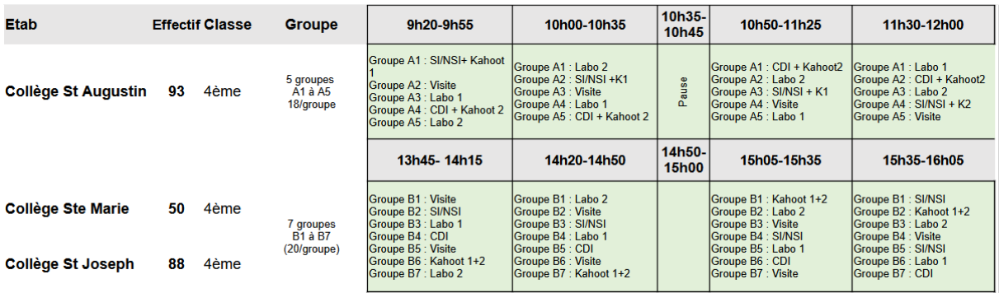

Village des sciences
A l'occasion de la fête de la science, Charlène Chartier avec les secondes animation du Porsmeur en collaboration avec Typhaine Lastennet de l’espace des sciences de Morlaix vont organiser, comme l'an passé, un village des sciences sur une journée entière dans l’atrium du lycée le lundi 13 octobre 2025.

Nous accueillerions des élèves de cycle 3 et collège des établissements morlaisiens.
En tant qu'élèves de terminale SI et NSI vous participerez également à cet évènement.
On va essayer de coller au thème retenu pour la Fête de la science : Les multiples visages des intelligences
Organisation#

Projets envisagés#
Une première scéance de brainstorming a dégagé quatre domaines à étudier correspondants à différentes formes d'Intelligences Artificielles :
- l'intelligence mécanique (Elia, Killian, + Prof) : c'est celle des algorithmes ou "procédures mécaniques" que l'on embarque dans les rouages d'appareils simples (Boulier, Règle à calculer, Odomètre, Pascaline, Horloge (astronomique), Automates, Enigma, ...) ou de machines plus ou moins automatiques (Machine de Turing, Machine à Commande Numérique CNC et Imprimante 3D, ...), [binaire et logique booléenne, séquence d'instructions, séquenceur, automatismes, engrenages, ordinateur, calculabilité et décidabilité, ... ] ;
- l'intelligence robotique (Augustin, Baptiste, Rémy) : c'est celle que l'on embarque avec grand renfort de capteurs (NFC, caméra Huskylens, ...) et moteurs (servomoteurs) dans les robots (Cozmo, Lunettes, ...) pour les rendre de plus en plus colaboratifs et autonomes, [] ;
- l'intelligence domotique (Elouan, Luna, Yann) : c'est celle des solutions techniques architecturales et fonctionnelles de nos foyers d'habitation intégrant de plus en plus d'objets connectés (IOT), [réseau LAN, ESP32, Raspberry PI, ...] ;
- l'intelligence générative (Oscar, Adam, Gabriel) : c'est celle dont tout le monde parle sous le nom de ChatGPT, mais est-ce le seul moteur/assistant IA disponible ? Qu'est-ce que l'ingénierie de prompt ? Peut-on concevoir son IA personnelle ? [Agentic IA, ChatBot, LLM, Gemini, Siri, Jarvis, ..., ] ;
Peut-on affirmer que derrière toutes ces Intelligences Artificielles se cache en réalité toujours de l'intelligence humaine ?
Votre première mission de projet (sprint) sera donc de construire une médiation scientifique s'appuyant sur les sujets de vos projets respectifs afin de les présenter à des collégiens de quatrième...
Démarche#
Vous travaillerez en mode agile le professeur jouant le role de Product Owner.
Dans chaque équipe vous désignerez un volontaires pour être Scrum Master.
Tout le monde participe activement au développement y compris le Product Owner en cas de besoin (mais pas trop parce qu'il n'a pas que ça à faire !;) ).
Ce projet sera donc aussi l'occasion de redécouvrir et d'expérimenter les rudiments d'une méthode agile que présente les vidéos suivantes...
Développer petit à petit de façon modulaire, par fonctionnalité...
Ressources techniques#
Mécanique#
- Machine de Turing ;
- Une machine de Turing... avec des Lego ;
- Machine de Turing... en Python ;
- https://www.cl.cam.ac.uk/projects/raspberrypi/tutorials/turing-machine/ ;
- https://projects-raspberry.com/section-3-building-the-turing-machine/ ;
- Minecraft: les portes logiques de Redstone expliquées ;
Robotique#
Poppy Ergo Jr#
Huskylens#
- wiki.dfrobot SEN0305_SEN0336 + SEN0336 ;
Domotique#
Home Assistant#
- Transformez votre maison en un foyer intelligent avec le Raspberry Pi ;
- Serveur domotique raspberry pi 4: guide complet pour une maison intelligente ;
- Domotique – un système facile à installer avec la Rasberry Pi ;